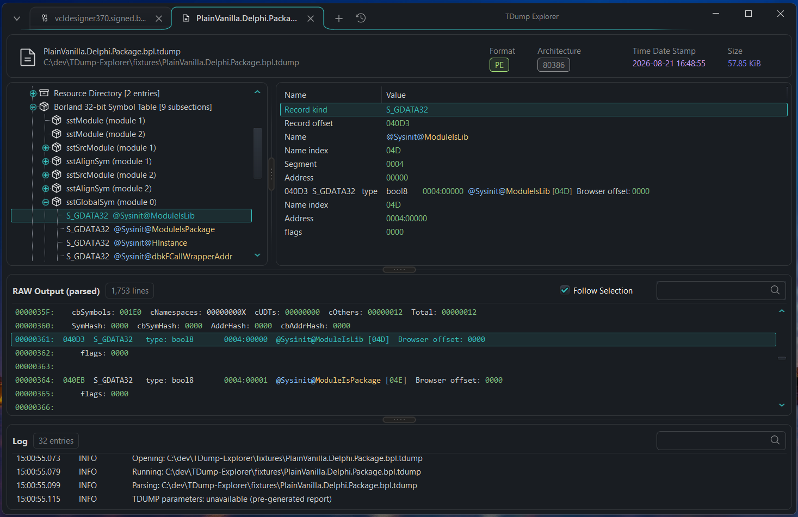
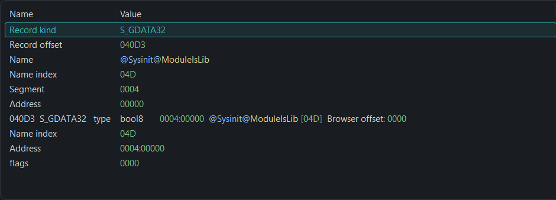
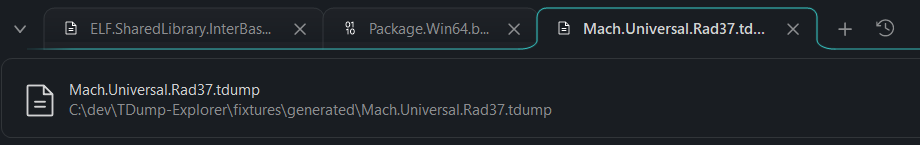
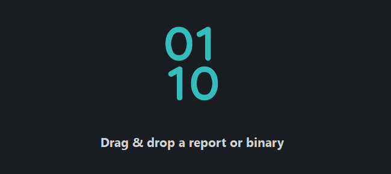

{kind=link}
{kind=link}
{kind=link}
You already have the report.
Open it, drop it onto the application, or pass its path on the command line. Navigate the structured tree and keep RAW output beside it.
No TDUMP installation required.
NATIVE WINDOWS · DELPHI / C++BUILDER
Inspect packages, symbols, imports, and relocations in a native workspace—with the original TDUMP report within reach.

INSIDE A DELPHI PACKAGE
From the symbol table to the record fields to the exact report text. The interpretation and its evidence belong together.
Browse the Borland debug subsections, then select a global symbol.
sstGlobalSym → S_GDATA32Inspect the record kind, name, segment, and address as individual fields.
Enable Follow Selection to bring supported source ranges into view in the syntax-highlighted RAW panel.
Fields from the captured application view
00000361: 040D3 S_GDATA32 type: bool8
0004:00000 @Sysinit@ModuleIsLib [04D]
Browser offset: 0000
00000362: flags: 0000Excerpt from the screenshot, wrapped for readability. This is an illustrated example, not a running browser version of TDump Explorer.

INSPECT YOUR BUILD ARTIFACTS
Start with the question you need to answer. Navigate the structures that TDUMP exposes.
PE / PORTABLE EXECUTABLE
Inspect Windows executables, DLLs, and Delphi packages through their headers, directories, and structured tables.
Coverage follows the selected TDUMP version. Unknown or unsupported content can remain available through diagnostics and source-backed fallback views.
FROM INSPECTION TO YOUR WORKFLOW
Copy selected rows as text, CSV, JSON, or Markdown. Bring a structured result into a script, a spreadsheet, or an issue report.
[
{"Name":"zError", "Value":"20", "Size":"29", "Type":"FUNC", "Binding":"GLOBAL"},
{"Name":"z_errmsg", "Value":"0", "Size":"50", "Type":"OBJECT", "Binding":"GLOBAL"},
{"Name":"zcalloc", "Value":"50", "Size":"11", "Type":"FUNC", "Binding":"GLOBAL"},
{"Name":"zcfree", "Value":"70", "Size":"D", "Type":"FUNC", "Binding":"GLOBAL"},
{"Name":"zlibCompileFlags", "Value":"10", "Size":"B", "Type":"FUNC", "Binding":"GLOBAL"}
]Five rows from ELF.Object.Win64.tdump, used by the parser tests. View fixture text ↗
NATIVE BY DESIGN
Open several binaries and reports in separate tabs. Each document keeps its structured data and original TDUMP report together.

Drop files onto the window, reopen a recent report, or queue several inputs for analysis.
Per-monitor DPI awareness sizes controls for each display. Choose light, dark, or system themes.

THE LARGE-REPORT PATH
START WITH WHAT YOU HAVE
Open it, drop it onto the application, or pass its path on the command line. Navigate the structured tree and keep RAW output beside it.
No TDUMP installation required.
Open the supported binary. TDump Explorer locates TDUMP or TDUMP64, generates a report, and opens the result in a document tab.
Requires TDUMP from a Delphi / RAD Studio installation.
| Input family | Recognized files | Coverage notes |
|---|---|---|
| Windows binaries | .exe .dll .bpl .dpl .ocx .cpl .scr .com .sys | PE headers, sections, imports, exports, resources, and relocations where emitted by TDUMP. |
| Objects & libraries | .obj .o .lib .ar .a | Object records and archive members. COFF input may use diagnostic or fallback views. |
| ELF | .elf .so | Headers, sections, program headers, symbols, dynamic entries, and relocations. |
| Mach-O | .dylib .bundle .mach | Architectures, load commands, sections, symbols, imports, and binding information. |
| Delphi units | .dcu | Diagnostic or fallback views when TDUMP cannot emit a normal structured report. |
| Existing reports | .tdump and compatible text reports | Open directly. No TDUMP installation required. |
Binary inputs require TDUMP or TDUMP64. Extension recognition does not guarantee full coverage; results depend on the report emitted by the installed tool. Some format-specific payloads remain generic or source-backed.
Source available under the MIT license. Packaged builds, when published, are listed on Releases.